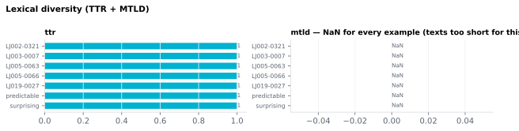

On this page
6.2.3Lexical diversity (TTR + MTLD)
Two complementary indices of vocabulary richness at the document level.
6.2.3.1What it is
Two complementary indices of vocabulary richness at the document level:
| Column | Formula | Range | Interpretation |
|---|---|---|---|
ttr |
unique types / total content-word tokens | (0, 1] | Higher = more lexical variety; strongly length-dependent. |
mtld |
Measure of Textual Lexical Diversity — length-corrected | ≈ 30–200 typical | Higher = more diversity; designed to be stable across text lengths (McCarthy 2010). |
Both are computed over content words only (upos in {NOUN, VERB, ADJ, ADV, PROPN}), so PUNCT and function words are excluded; tokens are
lowercased before counting types.
6.2.3.2See it
essay.txt: “The structure of the atom consists of a nucleus and a cloud of electrons. The nucleus contains protons and neutrons, which account for most of the mass of the atom. The electrons occupy regions of space at different levels of energy.”
diary.txt: “I was so happy today. I saw my mom and my dad and I hugged them. I love them so much and I told them that I love them. We laughed and I cried a little, but I was happy.”

6.2.3.3In your output
| stimulus_id | ttr ratio (0-1) | mtld tokens (mean factor length) |
|---|---|---|
| essay | 0.8571 | 41.16 |
| diary | 0.8125 | 23.89 |
6.2.3.4MATLAB
% Load the document-level table (one row per stimulus)
T = readtable('document/documents_summary_<timestamp>.csv', 'TextType', 'string');
T.Properties.VariableNames % every column in the file
head(T(:, {'stimulus_id', 'ttr', 'mtld'}), 10) % this feature's columns (first rows)
% Plot
barh(T.ttr); yticks(1:height(T)); yticklabels(T.stimulus_id); xlabel('ttr')
6.2.3.5How it's computed
- TTR =
|unique_forms| / n_tokensover lowercased content-word surface forms. As text grows, the probability of seeing a new type drops, so TTR monotonically decreases — making comparisons across different-length texts meaningless without correction. - MTLD walks through the text counting tokens until the running
TTR drops to or below a threshold (default 0.72), then counts a
"factor" and resets. Leftover tokens at the end contribute a
proportional partial factor,
(1 − TTR_remaining) / (1 − 0.72).MTLD = n_tokens / factors, averaged over a forward and a reverse pass (McCarthy 2010). Higher MTLD = it takes more tokens before TTR drops to the threshold = the text uses more types per token.
6.2.3.6In the code
Computed in sensi/extractors/lexical_diversity.py (in-house implementation
of the published procedure — equivalent to McCarthy 2010, not
verified bit-for-bit against the authors' original tool), called from
sensi/utils/doc_summary.py. Both measures run over content words only
(NOUN/VERB/ADJ/ADV/PROPN surface tokens, lowercased); punctuation and
function words are excluded before the calculation.
Edge convention: a text that never completes any factor (running TTR never reaches 0.72 in either direction — fully unique token sequences, very short texts) returns NaN: MTLD is undefined there, and fabricating a finite value would make it scale with text length, exactly the artifact MTLD exists to remove.
6.2.3.7Library
from extractors.lexical_diversity import compute_ttr, compute_mtld
tokens = ["cat", "sat", "mat", "cat", "slept"] # content words, lowercased
compute_ttr(tokens) # 0.8
compute_mtld(tokens) # forward+reverse mean; NaN if no factor completes
6.2.3.8EEG rationale
Lexical diversity is a stimulus-matching covariate in cross-corpus EEG/MEG studies — a low-diversity stimulus (e.g. a children's book with high repetition) has very different word-level statistics than a high-diversity stimulus (an academic essay), and any neural contrast between them needs to control for that. MTLD is the diversity metric of choice precisely because raw TTR is confounded with text length (Koizumi 2012, McCarthy 2010) — comparing TTRs across stimuli of different lengths is nearly always misleading.
For ERP studies that pool across many stimuli of varying length, MTLD is the right per-stimulus covariate to include in a regression.
6.2.3.9Papers
- McCarthy 2010 McCarthy & Jarvis. MTLD, vocd-D, and HD-D: A validation study of sophisticated approaches to lexical diversity assessment. Behavior Research Methods. doi:10.3758/BRM.42.2.381 — defines MTLD and shows it's stable across text lengths.
- Koizumi 2012 Koizumi & In'nami. Effects of text length on lexical diversity measures: Using short texts with less than 200 tokens. System 40(4), 522–532. doi:10.1016/j.system.2012.10.012 — TTR's length sensitivity in detail.